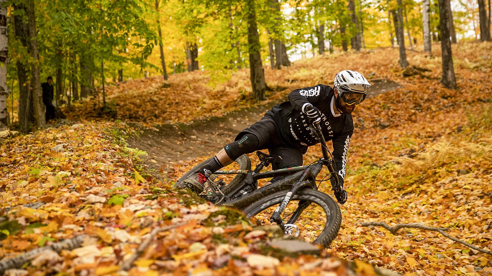
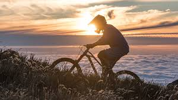

El ciclista de 21 años, que ya está clasificado a los Juegos Olímpicos, fue la figura en el torneo continental donde los representantes chilenos destacaron. En total fueron 19 medallas para el Team Chile.
Una gran actuación tuvo el equipo chileno en el Torneo Panamerico de Mountain Bike que se realiza en Puerto Rico.
En la comitiva nacional la figura de Martín Vidaurre fue la más destacada,
al lograr la medalla de oro en la categoría sub 23 pana y suramericana.
Un torneo exitoso que se gesta en la preparación de la que será su primera participación en unos Juegos Olímpicos.
 Además de Vidaurre, que también consiguió la plata en el Short track Masculino y en el Team Relay
otros 15 ciclistas nacionales también se colgaron medallas en el torneo que se realiza en Centroamérica. Catalina Vidaurre fue otra de
las más galardonadas al conseguir el oro suramericano y el bronce panamericano en la categoría sub 23 de damas.
Cabe destacar Martín ya está clasificado a Tokio 2021, siendo uno de los 18 cupos que tiene el Team Chile para la cita planetaria. En el mejor momento de su corta, pero explosiva carrera